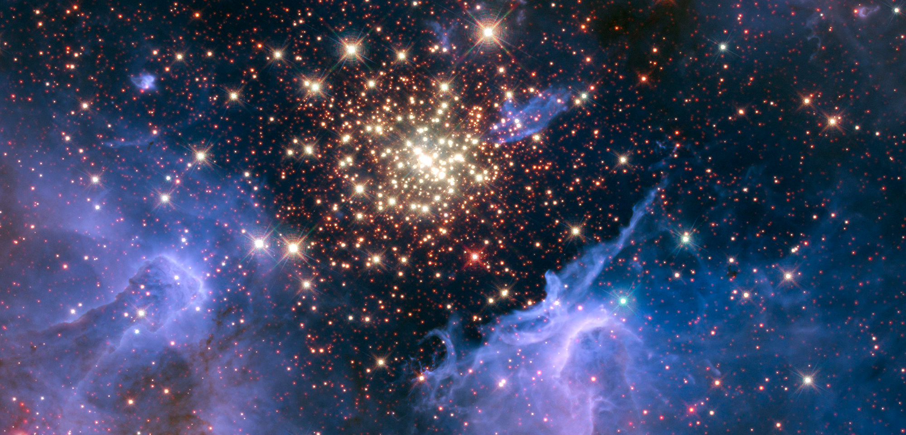

El nacimiento de una estrella
Las estrellas comienzan a formarse dentro de grandes nubes de gas y polvo llamadas nebulosas. La gravedad concentra parte de ese material hasta originar una nueva estrella.
Las estrellas son enormes cuerpos celestes que producen luz y energía. Su evolución depende principalmente de la cantidad de materia con la que se formaron.

Las estrellas comienzan a formarse dentro de grandes nubes de gas y polvo llamadas nebulosas. La gravedad concentra parte de ese material hasta originar una nueva estrella.
Algunas estrellas terminan convirtiéndose en enanas blancas. Otras, especialmente las de mayor tamaño, pueden experimentar grandes explosiones y dejar como resultado objetos extremadamente densos.